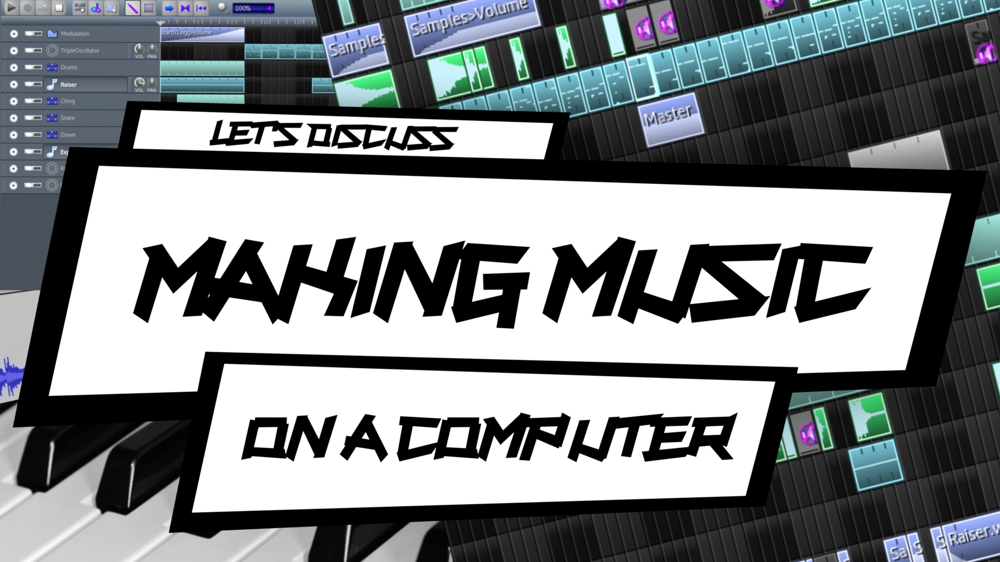
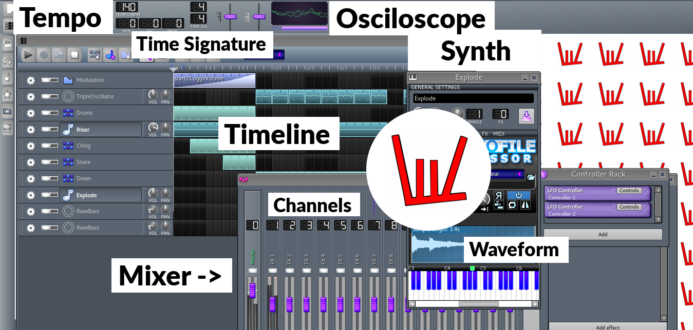

Blog
Music
Releases
Resources
Blog
Music
Releases
Resources
So, how do you make music on a computer?
Seo ©
Well, in order to make music on a computer, you have to know what follows:
1. Daw
2. Waveform Editor
3. Making a release
4. Score Editing
A Daw ©
1. Daw
⇢ A Daw is a music making software. (Click the picture above to maximize it) It has elements such as:
 ⇢ A Timeline ⇢ A Mixer (sets volumes for channels) ⇢ Synthesizers (you assign to certain channels) ⇢ Samples (you know, sounds) ⇢ An Osciloscope (shows the sound)
⇢ A Timeline ⇢ A Mixer (sets volumes for channels) ⇢ Synthesizers (you assign to certain channels) ⇢ Samples (you know, sounds) ⇢ An Osciloscope (shows the sound) Now, on the timeline, there are certain things such as:
⇢ Midi Patterns (that make the actual song) ⇢ Rhythm Blocks ⇢ Modulation Blocks (draw a graph for a certain parameter. ex: volume) Also, synthesizers have certain parameters:
⇢ Release (for how long the sound continues by itself) ⇢ Panning (out of where the sound comes out of, L/R speakers) ⇢ Detuning (pitch bending) ⇢ Attack (fade in) ⇢ Decay (not the same as Delay) ⇢ Delay (time interval before the actual sound) ⇢ Sustain (fade out) ⇢ Waves (Sine, Square, Saw, Triangle etc.) ⇢ Pitch Bending (raise or lower the pitch of a certain note) Learning by doing is what will help you master a Daw. So, go on making songs!
2. Waveform Editor
A Waveform Editor is shown in the picture below. When you song is ready, you make it into a soundfile that you edit with a waveform editor.
How so? Well, with a waveform editor you are able to:
⇢ Denoise your recordings ⇢ Overlay songs (crossfade) ⇢ Equalize (set volumes for bass, middle, treble) ⇢ Fade in and out (the ends of the song) ⇢ Adjust master volume (make sure you don't cause distorion) ⇢ Apply Efects (Phaser, Declipper, Set Tempo, Invert, Reverse etc.) ⇢ Record ⇢ Make Samples (also, in a Daw) ⇢ Sample (extract samples out of songs) Make sure that you fade in and out and that your song does not have distortion. Now, by distortion I don't mean the effect, but going outside the sound spectre.
Also, make sure that you only have quality soundfile extenions for your songs (.wav files for example). Even so, you have to release mp3 versions of your songs, but only when they are done.

Seo ( I made this picture ) ©
3. Making a release
Now, you have your songs. What do you do with them? Well, you have to make yourself an album art (so, a cover). ⇢ How to do that
Also, you have to promote your music online, by learning Seo ⇢ How to do that
Now, you could make a release as follows:
⇢ Album (7 or more songs) ⇢ Ep (5-7 songs) ⇢ Single (the most profitable in the world today) Also, you might want to know how to make money out of music. Well, mostly teaching music will get you money. I have a blogpost on that: ⇢ How to make money out of music
4. Score Editing
If you are less into making music on a computer, you could at least know how to make a score. Now, for that, you mostly have to get yourself a score editor and go with it.
Even so, you might not even have to have a score, you could only have an enumeration of chords, or tabs if you are into riffing, you know. Even so, a score will most certainly make you more professional.
Tabs for exmaple could be made with a text editor, same goes for lyrics and chords.
Even so, what truly matters is that you make great music.
Music Score ©
So, make sure to find yourself software that you understand and that suits you.
Blog post type: Music